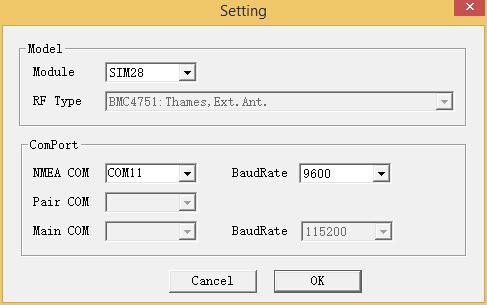

To make the GPS module be easily compatible with the existent shield , we use the same pin packaging as XBee wireless module.So you can put the GPS module into the existent shield which compatible with XBee. Also you can use the UartSBee V4 to connect the GPS module to USB port, run a software named u-center to analyze the GPS data and to reset the GPS module parameter. Put the GPS Bee on the UartSBee V4 , and connect the UartSBee V4 to the PC , open the u-center.exe , choose the UartSB port , then you can see the data that GPS module send back , and the software analyze them and show you the specific information ,like : time , speed , latitude and longitude, ASL and so on.
Kit is come with Mini Embedded Antenna U.FL for GPS，you can also purchase another Antenna with lager size Embedded Antenna U.FL for GPS. Compatible with all shields, breakout, boards with Xbee standard sockets.
4 pin 2.54mm to 2.0mm Female jumper wire is also available for easy adaption!
Model:SEN133D1P
| Item | Symbol | Min | Typ | Max | Unit |
|---|---|---|---|---|---|
| Power Supply | Vcc | 2.7 | 3.0 | 3.6 | V |
| Peak Supply Current (Vcc=3.6V) | 150 | mA | |||
| Sustained Supply Current (Vcc=3.0V) | |||||
| Acquisition | 102 | mA | |||
| Tracking | 44 | mA | |||
| Antenna Gain | 30 | dB | |||
| Operation temperature | -40 | 85 | ℃ |
| Pin | Name | Function |
|---|---|---|
| 1 | Vcc | Power suppl, 2.7-3.6VDC |
| 2 | TX | Serial Port 1 |
| 3 | RX | Serial Port 2 |
| 4 | NC | Reserved |
| 5 | EX | Reserved |
| 6 | NC | Reserved |
| 7 | NC | Reserved |
| 8 | NC | Reserved |
| 9 | NC | Reserved |
| 10 | GND | Ground |
| 11 | NC | Reserved |
| 12 | NC | Reserved |
| 13 | NC | Reserved |
| 14 | NC | Reserved |
| 15 | TP | Configurable Pulse output (default 1Hz, max 4Hz) |
| 16 | NC | Reserved |
| 17 | NC | Reserved |
| 18 | NC | Reserved |
| 19 | SCL | I2C clock pin (configuration only) |
| 20 | SDA | I2C data pin (configuration only) |
1. General purpose GPS shield Benefiting from XBee compatible pinout and voltage, GPS Bee could re-use any Xbee socket, from Xbee shield to Xbee explore. For example, you may just mount the Xbee module to Arduino projects by a Xbee shield.
2.
| USB |
| Bluetooth GPS module Work with UartSB as a USB port GPS module. You may use powerful Ucenter to get practical details easily. Or, add a Bluetooth module to get a Bluetooth GPS module for your projects. |
Click here to see the legible and complete image.
1. GPS Bee has change the module as SIM28 which the same footprint as origin version.
2. You should use "SIMCom GPS DEMO" tools to receive SIM28 module data.
3. Open SIMCom_GPS_DEMO tools, go to Module->properties->module->select SIM28.

4. Open SIMCom_GPS_DEMO tools, go to Module->connect. Select the serial port which the GPS module used.

Please list your question here:
If you have questions or other better design ideas, you can go to our forum or wish to discuss.
| Revision | Descriptions | Release |
|---|---|---|
| GPS Bee kit (with Mini Embedded Antenna) | - | Nov 08, 2009 |
| v0.91 | complement | Mar 15, 2011 |
| v1.2 | antenna | May 18,2012 |
| v1.2 | change the GPS module to SIM28 | Dec 5,2013 |
| v1.3 | change the GPS module to SIM28, change the LED to the bottom side. | Jan 10,2014 |
Here to buy GPS Bee kit (with Mini Embedded Antenna): http://www.seeedstudio.com/depot/gps-bee-kit-with-mini-embedded-antenna-p-560.html?cPath=84_89
This documentation is licensed under the Creative Commons Attribution-ShareAlike License 3.0 Source code and libraries are licensed under GPL/LGPL, see source code files for details.
Copyright (c) 2008-2016 Seeed Development Limited (www.seeedstudio.com / www.seeed.cc){kind=link}